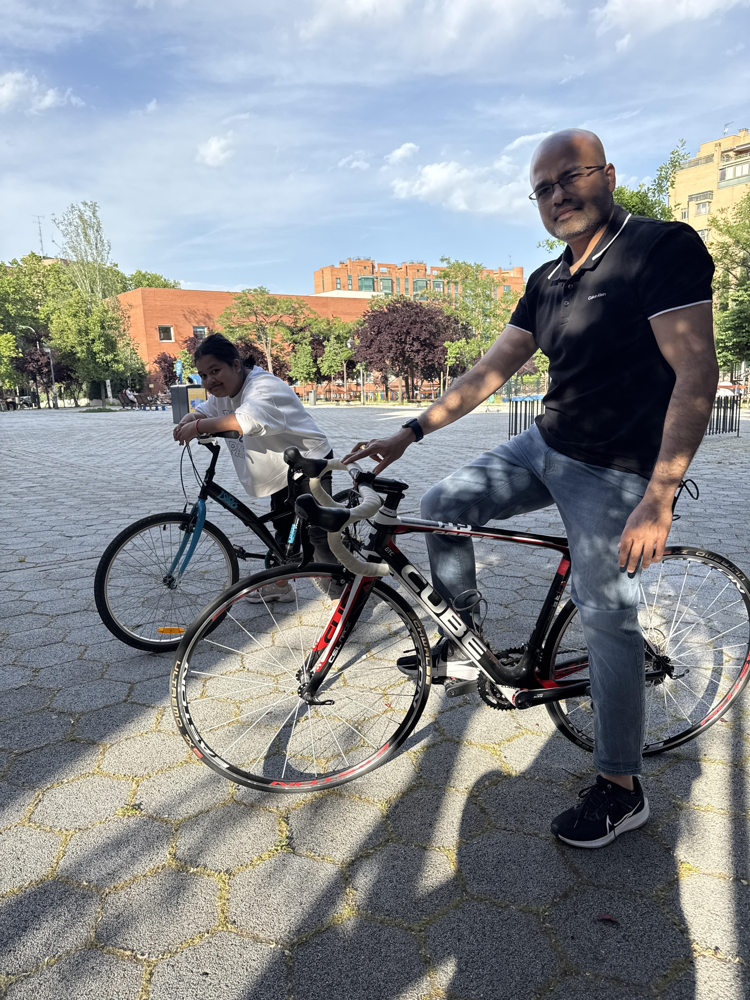

Beyond the code: My Education background, IT professional certificates I earned, background and hobbies.
My story began in Bheemunipatnam, a historic town that is part of the beautiful coastal city of Visakhapatnam (Andhra Pradesh, India), where I completed my schooling.
I kickstarted my professional career in Bangalore, the Silicon Valley of India. I spent 5 formative years there building my foundation in systems engineering before seeking new oppurtunities.
The next chapter took me to Singapore, where I spent 14 years shaping my IT career. This period was pivotal in my transition to DevOps, Cloud Architecture, and Automation leadership, working with major enterprises.
Recently, I embarked on a new adventure, relocating to Europe. I currently live in Madrid, Spain with my family, embracing the vibrant culture while continuing my career.
M V G R College of Engineering | India
Built a strong foundation in systems engineering, networking protocols, and software architecture.
Interested to cycle around the cycling track mostly for a quick exercise and sometimes exploring new routes. Prefer cycing with my family
Unwinding with Xbox games and exploring immersive worlds.
Favorites: Assassin's Creed (Unity/Origins), RDR2, Flight Simulator, Desperados, Forza.
Learning pencil sketching and practicing using the ShadowDraw app on iPad.
I am always open to discussing Cloud Security, Automation Architectures, New Emerging Technologies to keep myself updated, or simply chatting about different Food Cultures from around the world.